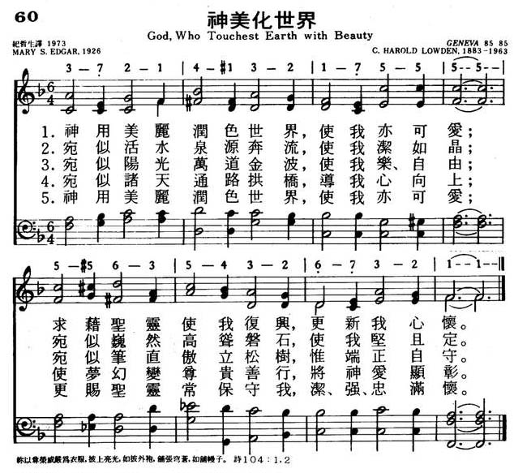

|
|
|
|
1 God who touches earth with beauty, 2 Like your springs and running water, 3 Like your dancing waves in sunlight, 4 Like the arching of the heavens, 5 God who touches earth with beauty, Source: Voices Together #550 |
1.神用美丽润色世界，使我亦可爱； |
|
060神美化世界  God, Who Touchest Earth with Beauty
|
|
|
|
|


"God, Who Touches Earth with Beauty." Another quite unfamiliar hymn, but a gem. Almost reminds me of a hymn like "All Things Bright and Beautiful" for some reason. I like it when there are up beat hymns along the way as I'm recording; but these slower, simple feeling hymns really allow me to feel almost like I'm meditating as I'm singing. The comparisons are really quite beautiful, such as "Like the straightness of the pine trees, let me upright be." https://youtu.be/dPtz6yUhYJE -
God Who Touches Earth With Beauty Sung by Houston Children's Chorus https://youtu.be/tAS6hppiNkY
| Text: | God, Who Touchest Earth with Beauty |
| Author: | Mary S. Edgar |
| Tune: | GENEVA |
| Composer: | Carl Harold Lowden, 1885- |
| Short Name: | Mary S. Edgar |
| Full Name: | Edgar, Mary S., 1889-1973 |
| Birth Year: | 1889 |
| Death Year: | 1973 |
Tune Information
| Title: | GENEVA (Lowden) |
| Composer: | C. Harold Lowden |
| Meter: | 8.6.8.6 |
| Incipit: | 37214 13217 55555 |
| Key: | F Major |
| Short Name: | C. Harold Lowden |
| Full Name: | Lowden, C. Harold, 1883-1963 |
| Birth Year: | 1883 |
| Death Year: | 1963 |
Mary Susanne Edgar 1889-1973
|
Mary Susannah Edgar
|
|
|---|---|
| Born |
May 23, 1889 Sundridge, Ontario, Canada |
| Died |
September 17, 1973, aged 84 Toronto, Ontario, Canada |
| Occupation | camp director |
Mary Susannah Edgar was a Canadian author of several books, one-act plays and hymns, the most famous of them being God Who Touchest Earth with Beauty, which has been translated into several languages and placed in hymnals around the world.
Biography[edit]
Mary Susannah Edgar was born in Sundridge, Ontario on May 23, 1889.[1] She was the daughter of Joseph Edgar and Mary Little, from Sundridge, Ontario. Her schooling took her from Sundridge to Barrie High School and Havergal College, Toronto, Ontario.
In 1922, she opened a girls' camp near Sundridge on Lake Bernard, called Glen Bernard. Edgar continued as the camp's director until her retirement in 1956. Her life was devoted to working with girls and camping through many local, provincial and national organizations.
She was the author of many books, plays and hymns. One such hymn is "O God of All the Many Lands".
Edgar died on September 17, 1973.
Works[edit]
Books[edit]
- Wood-fire and Candlelight (1945)
- Under Open Skies (1956)
- The Christmas Wreath of Verse (1967)
- Once there was a Camper (1970)
- A Magic Store (poem)
https://en.wikipedia.org/wiki/Mary_Susanne_Edgar
GOD,
WHO TOUCHEST EARTH WITH BEAUTY hymnstudiesblog
“He hath made everything beautiful in His time” (Eccl. 3:11)
INTRO.:
A hymn which reminds us of the beauty with which God made
everything is “God, Who Touchest (or Touches) Earth with Beauty” (#621 in Hymns
for Worship Revised). The text was written by Mary Susanne (or Susannah) Edgar,
who was born on May 23, 1889, at Sundridge in Ontario, Canada, the daughter of
Joseph Edgar and Mary (Little) Edgar. After Barrie High School, she was educated
at Havergal College and the University of Toronto, and was also a graduate of
the National Training School of the Y. W. C. A. in New York City, NY. A member
of the Anglican Church, she was for many years associated with the Y. W. C. A.
of Canada. Though she published poetry, hymns, and plays, she is chiefly known
for her development of Camp Glen Bernard for Girls in northern Ontario near
Sundridge on Lake Bernard. It has become a leader in environmental education.
Edgar was the director from its beginning in 1922 until her retirement in 1956.
This hymn, penned in 1925 for campers, was awarded first prize in a contest
conducted by the American Camping Association the following year.
The tune (Geneva) was composed by Carl Harold Lowden (1883-1963). In 1925, when
he was music editor for the Sunday School Board of the Evangelical and Reformed
Church (now the United Church of Christ), these words were brought to his
attention, and he set them to music. The song was first sung from leaflets at an
International Sunday School Association meeting in Chicago, IL, and has been
translated into many languages. Lowden also provided the tune for the hymn
“Living for Jesus.” Through the years Miss Edgar produced several collections of
poems and essays including Wood-Fire and Candle-Light (1945), Under Open Skies
(1955), and Once There Was a Camper (1970), as well as a number of hymns, mostly
for use on special occasions at outdoor services, such as “Ere This Day at Camp
Be Done” and “God of the Nations of the Earth,” and some one-act plays. After
traveling widely, she retired in 1956 to Toronto in Ontario, Canada, where she
died, aged 84, on September 17, 1973.
“God, Who Touchest Earth with Beauty,” at least with Lowden’s music, was
apparently not copyrighted until 1955. Other tunes have been used with it.
Hymnary.com suggests one (Bullinger) composed in 1874 by Ethelbert W. Bullinger
for use with Frances Havergal’s hymn “I Am Trusting Thee, Lord Jesus.” Another (Spiritus
Christi) was composed by Henry Walford Davies. There was also a tune (Glen
Bernard) that was composed for the hymn in 1925 by James Edmund Jones
(1866-1939). The Baptist Hymnal of 1991 uses a tune (Butler) composed in 1966 by
Aubrey L. (Pete) Butler (b. 1933). It was first published in 1972 and arranged
for congregational unison singing in the hymnal by Anna Laura Page (b. 1943).
Another new tune (Ludington) was composed in 2008 by Gregg DeMey. And I found a
reference to a publication in which the hymn was set to new music by Helen Kemp.
Many recent hymnbooks use a version in which, with permission of the copyright
owners, the text was revised extensively by the editors of Hymns for the Living
Church (1974). Aside from the updated pronouns and verb forms, I have tried to
note the original in parentheses below. Among hymnbooks published by members of
the Lord’s church for use in churches of Christ, it appears to my knowledge only
in Hymns for Worship.
The song calls upon the God of nature to bless us spiritually.
I. Stanza 1 asks Him tovrecreate us by His Spirit
God, who touchest earth with beauty,
Make my heart anew (me lovely, too),
With Thy Spirit recreate me,
Pure and strong and true (Make my heart anew).
Those who wait on God are told that they can be renewed: Isa. 40:31
To accomplish this, He gives us of His Spirit: 1 Jn. 4:12-13
The result is that we are made pure and strong and true: Eph. 3:16
II. Stanza 2 asks Him to purify and strengthen our hearts
Like Thy springs and running waters,
Make me crystal pure,
Like Thy rocks of towering grandeur
Make me strong and sure.
Like a crystal spring, God wants us to be pure: 1 Jn. 3:1-3
God Himself is like a rock of towering grandeur: Ps. 71:1-3
Thus, He can help us be steadfast and sure like a rock: 2 Pet. 1:8-10
III. Stanza 3 asks Him to help us live lives of gladness and uprightness (not in
HFWR)
Like the dancing (shining) waves in sunlight,
Make me glad and free,
Like the straightness of the pine trees,
Let me upright be.
The blessings of God should make our hearts glad: Ps. 16:7-9
They also encourage us to be like a tree planted by the water: Ps. 1:1-3
Therefore, we should strive to be upright in our lives: Ps. 112:1-4
IV. Stanza 4 asks Him to lift our thoughts to higher things
Like the arching of the heavens,
Lift my thoughts above,
Turn my dreams to noble action,
Ministries of love.
We need to lift our thoughts above: Col. 3:1-2
But we must also express these higher thoughts in “noble action”: 1 Jn. 3:16-18
The reason for this is that we are to be ministers in love to one another: 1
Pet. 4:8-10
Stanza 5
V. Stanza 5 asks Him to give us songs of joy and thanksgiving (not in HFWR)
Like the birds that soar while singing,
Give my heart a song;
May the music of thanksgiving
Echo clear and strong.
God wants us to have a joyful song in our hearts: Ps. 40:1-3
It should be a song of thanksgiving: Ps. 26:6-7
And it should echo clear and strong for all to hear: Ps. 98:2-4
VI. Stanza 6 asks Him to keep us as we ought to be
God, who touches earth with beauty,
Make my heart anew (me lovely, too),
Keep me ever, by Thy Spirit,
Pure and strong and true.
This is an echo of the opening stanza which asked God to make our hearts anew:
Rom. 12:1-2
However, the conclusion of the song then calls upon the Lord to keep us pleasing
in His sight: Jude 1 vs. 24-25
And He will make us pure and strong and true as we are transformed into His
image: 2 Cor. 3:18
CONCL.:
This hymn does not specifically tell us anything about how to be delivered from sin’s crippling bondage, through faith in Christ, or how to live and grow in Christlikeness; yet, it is not incompatible with these essential concepts. Thus the song can serve a worthwhile purpose to help remind us of lessons God has provided all around us in nature. We need learn those lessons ourselves, and then teach them to others, especially to instill godly wisdom in our children. In this way, we look for a re-creating work in our hearts from “God, Who Touchest Earth with Beauty.”
https://hymnstudiesblog.wordpress.com/2018/02/19/god-who-touchest-earth-with-beauty/
Words: Mary Susanne Edgar (b. May 23, 1889; d. Sept. 17,
1973)
Music: Bullinger, by Ethelbert William Bullinger (b. Dec.
15, 1837; d. June 6, 1913)
Links:
Wordwise Hymns
The Cyber Hymnal (Mary
Edgar)

Note: There is a biographical note about Mary Edgar in the Wordwise Hymns link. She was a Canadian author who published poetry, hymns, and plays, but she is chiefly known for her development of a camp for girls in Ontario. Edgar was the director of Camp Glen Bernard from its beginning in 1922 until her retirement in 1956. In this 1922 photograph, Mary is on the left. On the right is Canadian Women’s Golf Champion, Ada Mackenzie. The latter instructed the campers in golf.
The author’s great love for nature is evident in her hymn, published in 1925. It was submitted to a contest by the American Camping Association the following year, and won first prize.
As to the tune’ composer, Dr. Bullinger was a Hebrew and Greek scholar, and a musician. He developed The Companion Bible, with its extensive Hebrew and Greek notes. The tune Bullinger is also used with Frances Havergal’s hymn I Am Trusting Thee, Lord Jesus. There was also a tune called Glen Bernard. It was written for the hymn in 1925 by James Edmund Jones (1866-1939).
1) God who touchest earth with beauty,
Make my heart anew;
With Thy Spirit recreate me,
Pure, and strong and true.
Since God created all things in the natural world, it’s not surprising that the natural world reflects something of His nature, and that it is used in His Word to teach spiritual lessons. For example, the lazy person is told to “go to the ant” and learn lessons of discipline and conservation from that little insect (Prov. 6:6-8). And those who wait on God in prayer are told they will “renew their strength,” and “mount up with wings like eagles” (Isa. 40:31).
The parables of the Lord Jesus are full of such comparisons. He used simple objects such as coins, and familiar practices such as farming, to illustrate valuable lessons. And we can envision the folly of mending an old garment with a new piece of cloth that has not been pre-shrunk (Matt. 9:16), or the impossibility of a camel squeezing through the eye of a needle (Matt. 19:24). These analogies and many more convey spiritual insights to all willing to learn by them.
Matthew, Mark and Luke each record Christ’s parable about different kinds of soil (cf. Lk. 8:4-15). It was presented as a basic story teaching foundational truths (Mk. 4:13). In the parable, the seed being sown in a field is the Word of God being proclaimed to the multitudes. Some of the seed fell on the rocks, and some on the beaten path. These pictured hearts that were unreceptive to the truth. Other seeds fell among thorns or weeds, and the plants that sprouted were choked out. But some fell in good soil and bore lasting fruit. The latter portrays those who believe and faithfully apply the Word.
It is in this way that the poet uses what she no doubt saw all around her in her camping work, to teach spiritual lessons. See how, in her hymn, Miss Edgar draws analogies from various things in the natural world.
Stanza 2. She calls us to purity of heart, like springs of crystal clear water. And like great towering rocks we ought to be strong and sure–steadfast in our spiritual lives.
Stanza 3. Like waves dancing in the sunlight, the hymn calls upon us to live our lives in gladness and freedom. And like the straightness of the pines, to be upright in character.
Stanza 4. As the heavens arch overhead, we ought to lift our thoughts to higher things, and seek to express this higher perspective in “noble action” and loving service.
Stanza 5 is an echo of the opening stanza, but where the prayer at first is “make me” one who is pleasing in Your sight (cf. II Cor. 3:18), the conclusion of the prayer calls up upon the Lord to “keep me” as I ought to be (cf. Jude 1:24-25).
Though this hymn does not tell us anything about how to be delivered from sin’s crippling bondage, through faith in Christ, or how the indwelling Holy Spirit empowers the believer to to live and grow in Christlikeness, it is not incompatible with these essential truths. If they are taught by other means, this hymn can serve a worthwhile purpose.
The song can help to sensitize us to lessons God has provided all around us. We can learn from them ourselves, and point them out to others. This is particularly valuable as a way for parents to instill godly wisdom in their children. The Lord has created a beautiful world, and it points the way to His re-creating work in each of us.
Questions:
1) What illustrations from nature have been a help in your own spiritual
life?
2) What other hymns do you know that provide good lessons from nature?
Links:
Wordwise Hymns
The Cyber Hymnal (Mary
Edgar)
https://wordwisehymns.com/2014/06/20/god-who-touchest-earth-with-beauty/